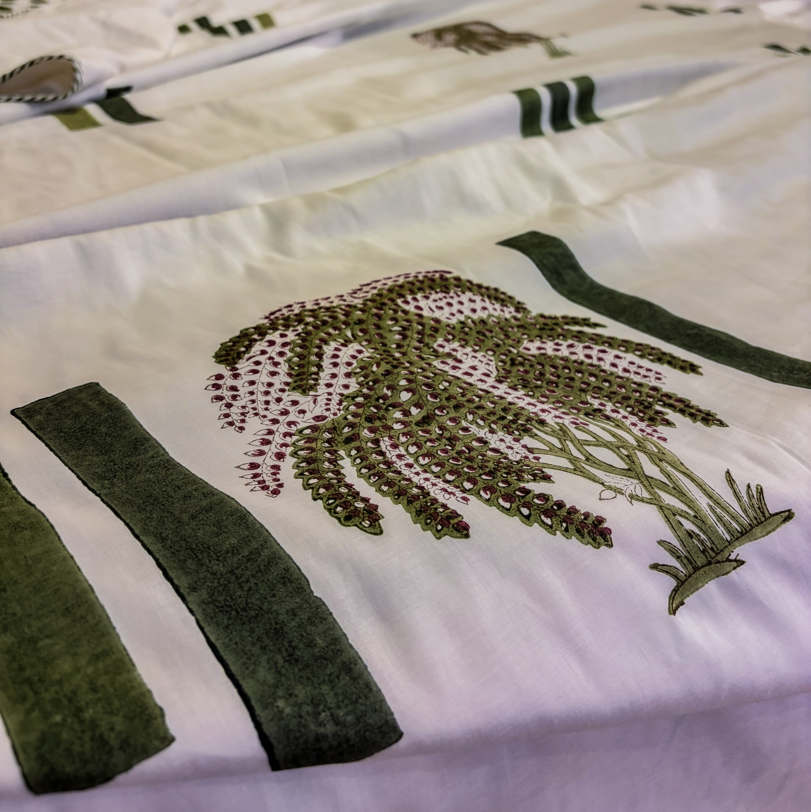
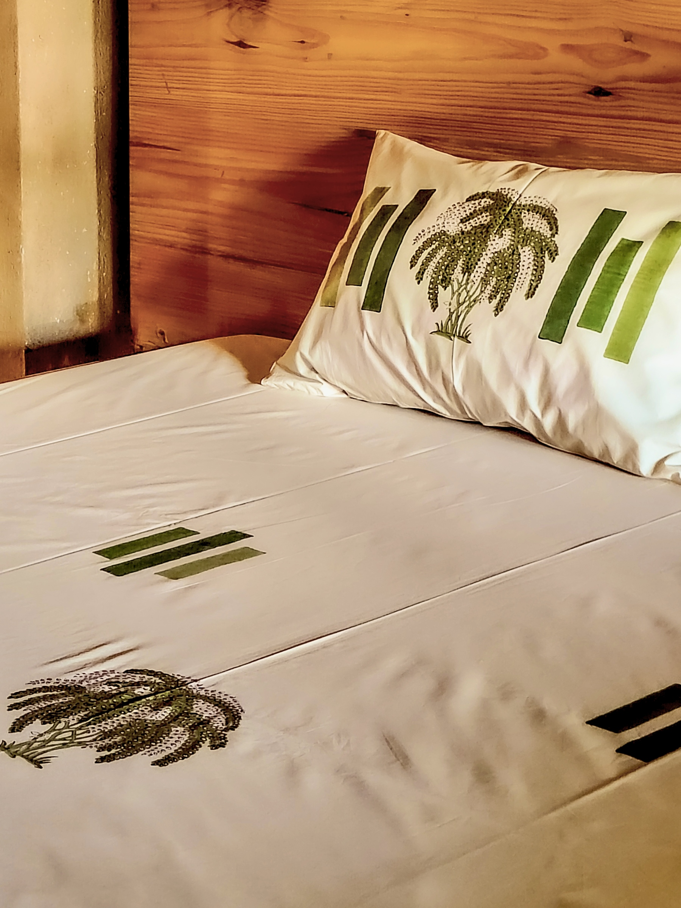

Study Three — Punar
पुनर् · againA pause taken beneath a tall palm.
The eye looks up, looks again.
Punar draws a second look when the rhythm slows.
The palm sits within a more open rectangular structure. The reverse side of the dohar carries a dot grid — a vibrant field not always visible at first glance.
Suited for rooms where surfaces need to read with more air.
Formats: bedsheet, bedcover, dohar.
← Studies
Punar bedcover

Punar dohar

Punar bedsheet